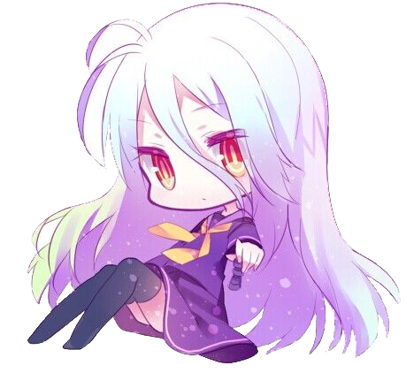
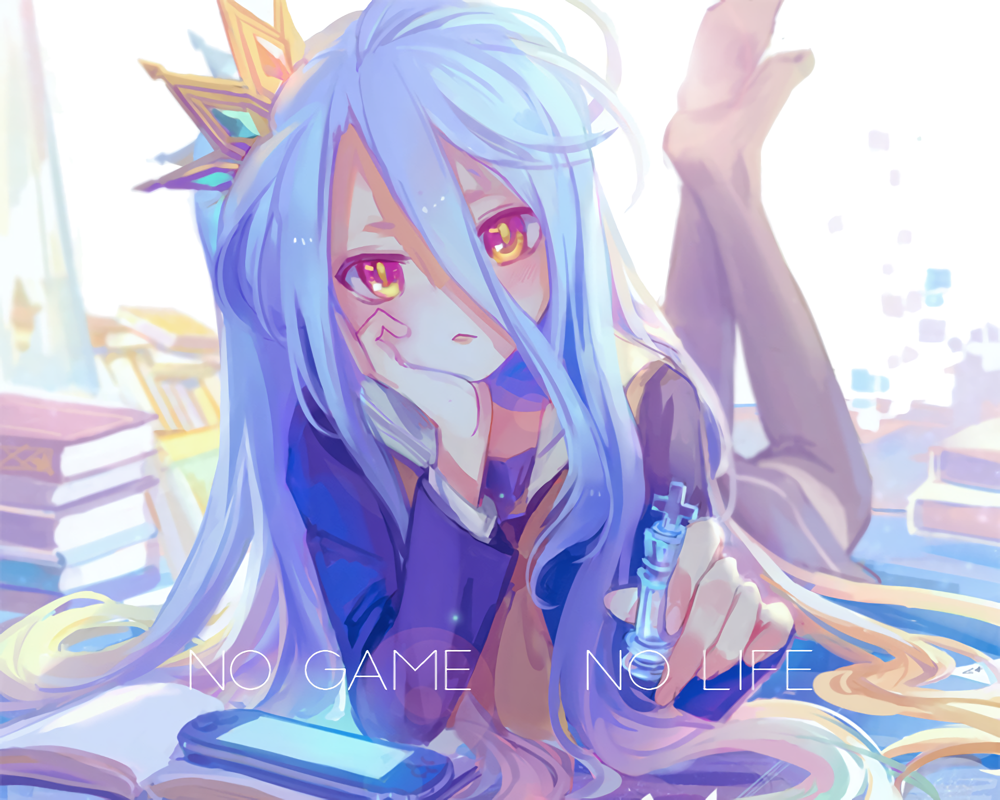
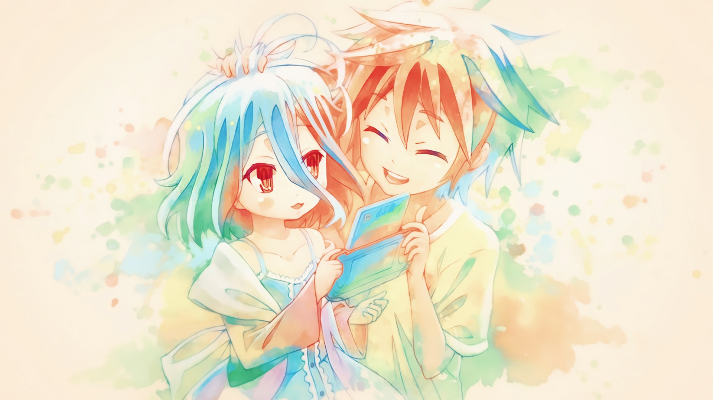
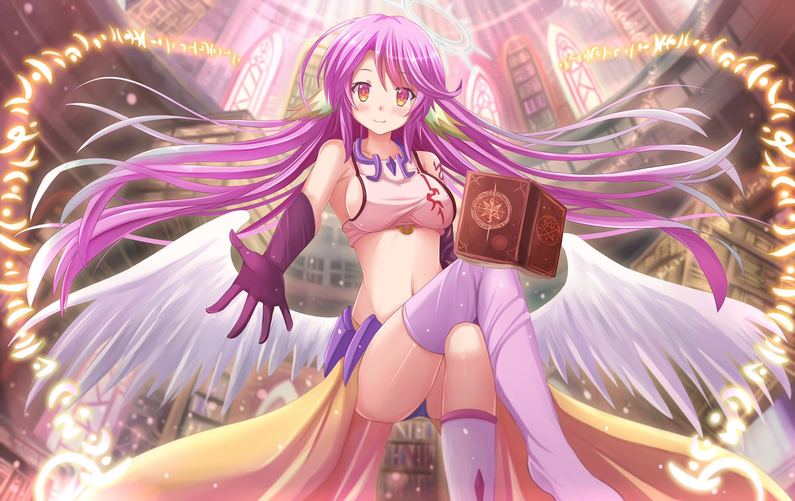
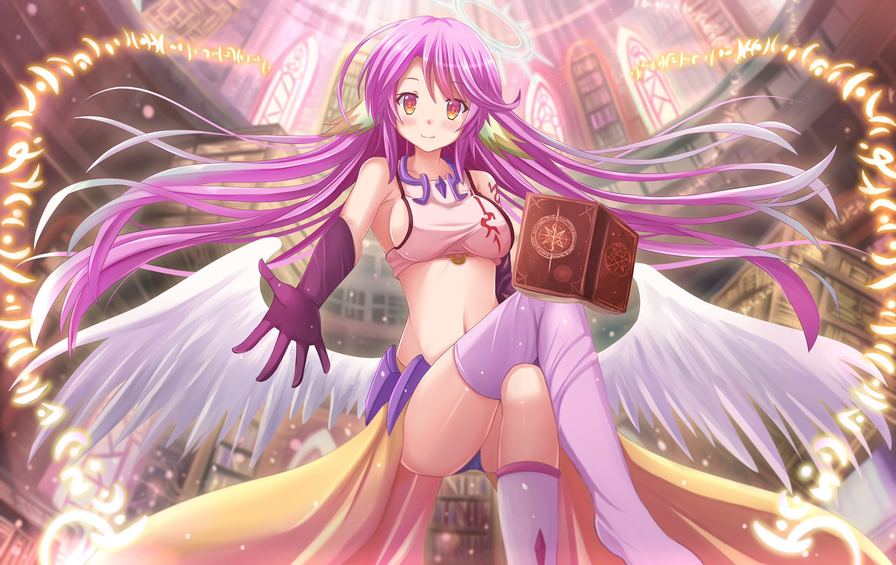

No game No life
Résumé
Sora et Shiro sont deux frères et sœurs inséparables, autant dans la réalité que dans les jeux vidéo. En équipe, leurs compétences individuelles les rendent invincibles. Dans le vrai monde, ils sont reclus et asociaux. Un jour Sora et Shiro reçoivent une offre d'un mistérieux personnage : celle de renaître dans son monde, un monde où tout est décidé par les jeux. Sora et Shiro, fatigués de leur monde, acceptent sa proposition  et sont alors transportés dans le monde fantaisiste de Disboard Ensemble, Sora et Shiro commencent leur voyage, avec qu'un seul objectif final : gagner contre Teto le titre de Dieux uniques de ce monde.
Description
- Titre : ノーゲーム・ノーライフ
- Genre : Action, comédie, fantasy
- Réalisateur : Atsuko Ishizuka
- Scénariste : Juki Hanada
- Studio : Madhouse
- Sortie : 9 avril 2014
- Episodes : 12
Critique
Scenario : 3/5
Image : 4/5
Personnage : 4/5
Valeur : 2/5
GLOBAL : 3/5
Bande Annonce
Trailer très court en VOSTFR
Galerie
  
